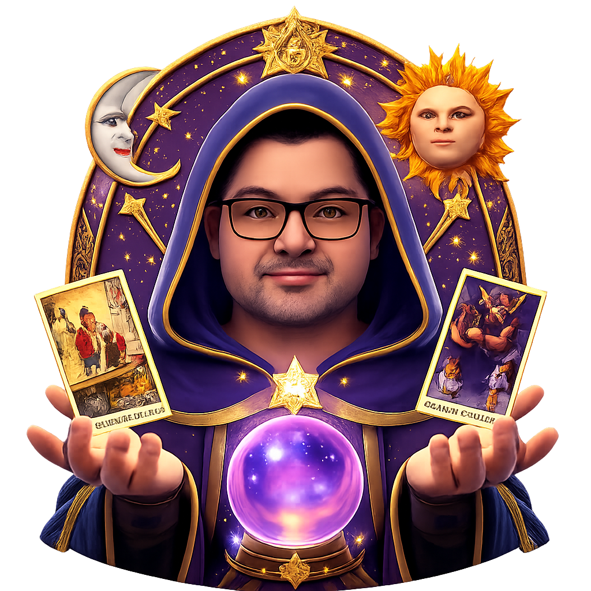

Sobre Nosotros 🔮
En TuTarot, somos un equipo apasionado por el arte del tarot y su capacidad para ofrecer orientación y claridad en la vida. Nuestra misión es proporcionar lecturas de tarot precisas, personalizadas y accesibles para todos, sin importar su nivel de experiencia.
Creemos que el tarot es una herramienta poderosa para el autoconocimiento y la toma de decisiones. Por eso, nos dedicamos a crear una plataforma que combine la sabiduría tradicional del tarot con la tecnología moderna, permitiendo a nuestros usuarios explorar sus preguntas más profundas y encontrar respuestas significativas.
Nuestro equipo está compuesto por expertos en tarot con años de experiencia en la lectura de cartas, así como desarrolladores y diseñadores comprometidos con ofrecer una experiencia de usuario excepcional. Juntos, trabajamos para asegurarnos de que cada lectura sea única, precisa y enriquecedora.
En TuTarot, valoramos la privacidad y la confidencialidad de nuestros usuarios. Nos esforzamos por crear un espacio seguro donde puedas explorar tus inquietudes y recibir orientación sin juicios.
